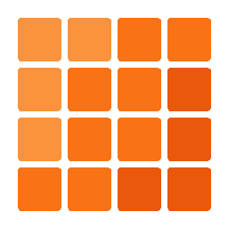

v0.0.2A trainable embedding table for the JVM, in pure Kotlin. Sister project to Tessera — completing the text → tokens → vectors pipeline.
Mosaic does one thing well: it owns the matrix that turns token IDs into vectors. No training, no GPU, no surprise allocations.
Embeddings live in a single contiguous FloatArray. Cache-friendly row access, ~1 % overhead over the theoretical bound.
uniformDefault, uniform, xavier, he, zeros, constant — all seedable for reproducible runs.
O(N log K) mostSimilar via a fixed-size min-heap. ~3 ms on 10 K vocab × 128 dim.
TesseraEmbeddings wires a BPE tokenizer straight into the table. Vocab-size mismatches caught at construction.
16-byte header + raw float32 LE + JSON sidecar with SHA-256. Save/load round-trips exactly.
Pure Kotlin stdlib + kotlinx.serialization + Tessera. No DJL, no KInference, no DL4J.
Four steps from a token ID to a copy of its embedding vector.
A non-negative integer in [0, vocabSize), usually produced by Tessera.
Mosaic computes id × embeddingDim to index into the contiguous backing array.
System.arraycopy pulls embeddingDim floats into a fresh buffer — no shared references.
You get a FloatArray that you can mutate freely. The table is untouched.
The two hot paths, animated.
Add the JitPack dependency, create a table, encode some text.
// settings.gradle.kts dependencyResolutionManagement { repositories { mavenCentral() maven { url = uri("https://jitpack.io") } } } // build.gradle.kts dependencies { implementation("com.github.HectorIFC:mosaic:mosaic-core-v0.0.2") }
import dev.mosaic.EmbeddingTable import dev.mosaic.Initializer import dev.mosaic.TesseraEmbeddings import dev.tessera.BpeTokenizer fun main() { val tokenizer = BpeTokenizer.load("tessera.json") val table = EmbeddingTable.create( vocabSize = tokenizer.vocabSize, embeddingDim = 128, initializer = Initializer.uniformDefault(seed = 42L), ) val pipeline = TesseraEmbeddings(tokenizer, table) val vectors = pipeline.encode("Hello, mosaic!") table.save("mosaic.bin") }
Minimal by design.
Coverage, linting, and benchmarks aren't an afterthought.
mosaic-core (threshold 80 %)mostSimilar at 10 K vocab × 128 dim